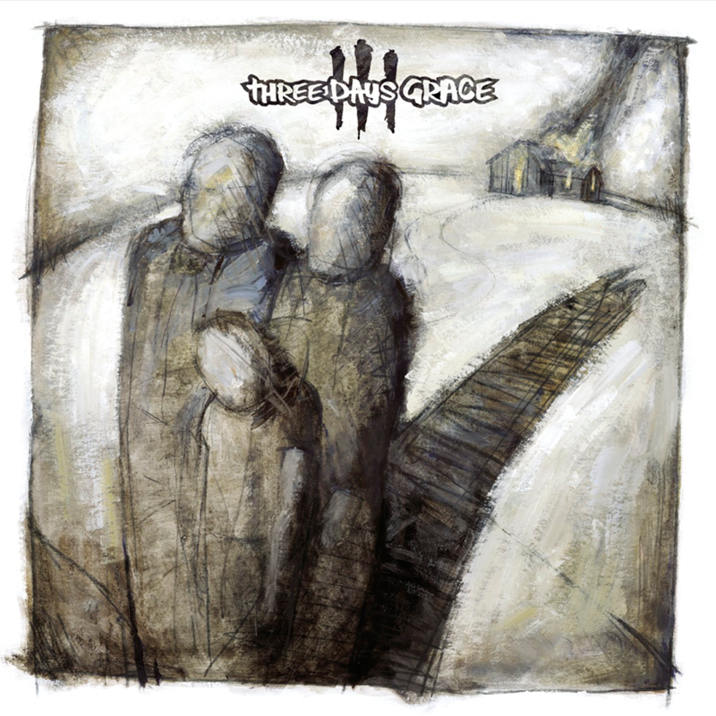
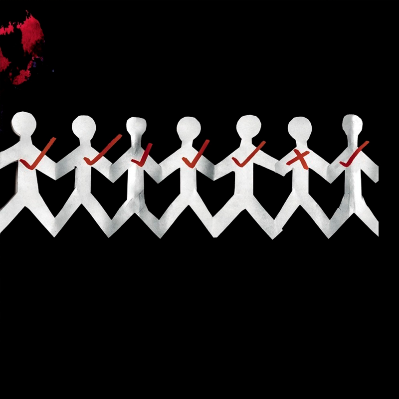
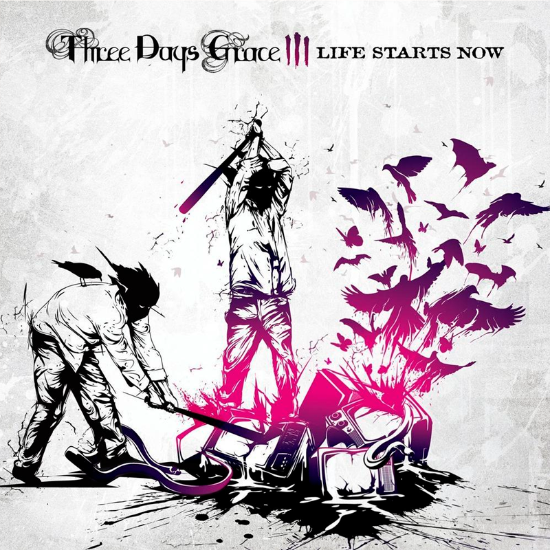
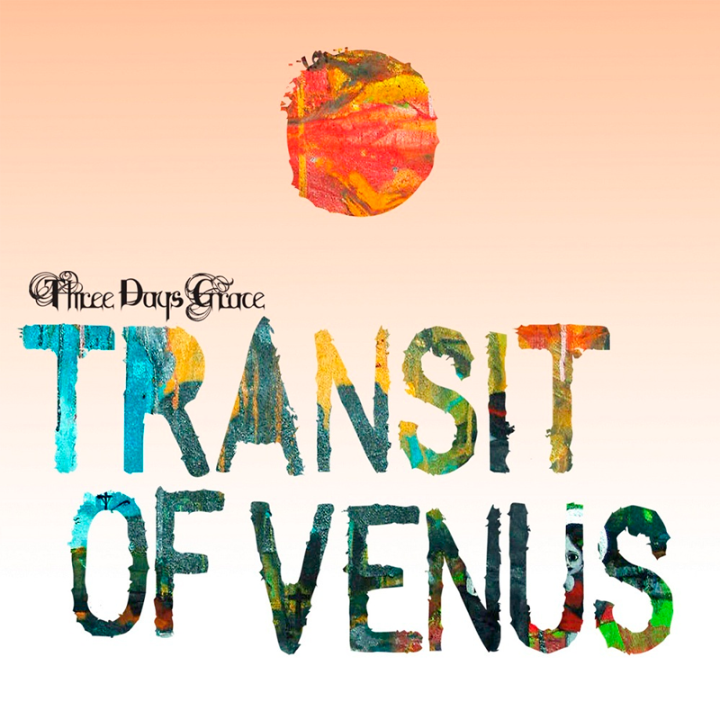
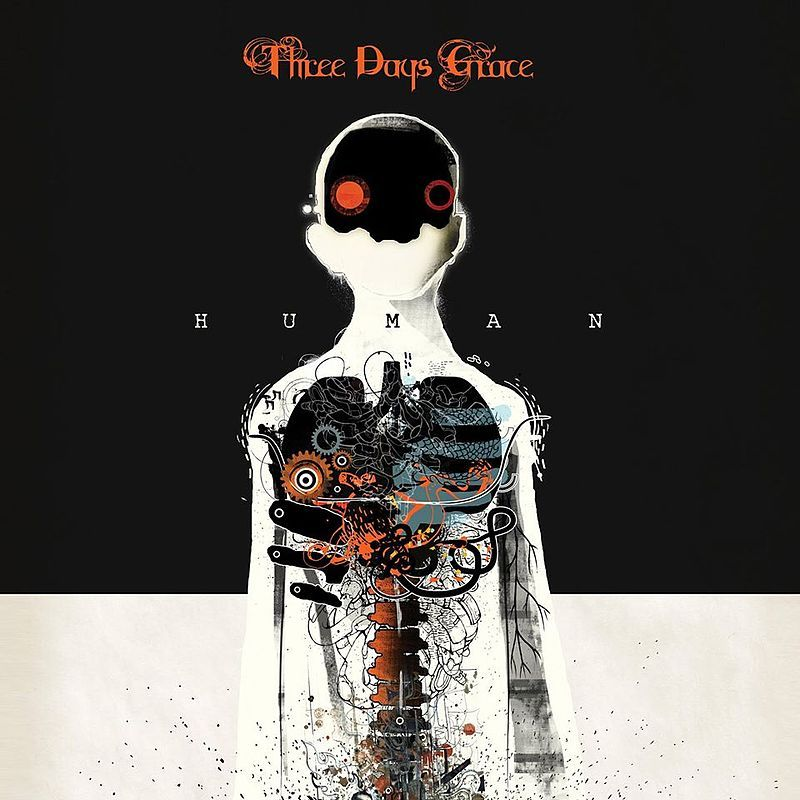
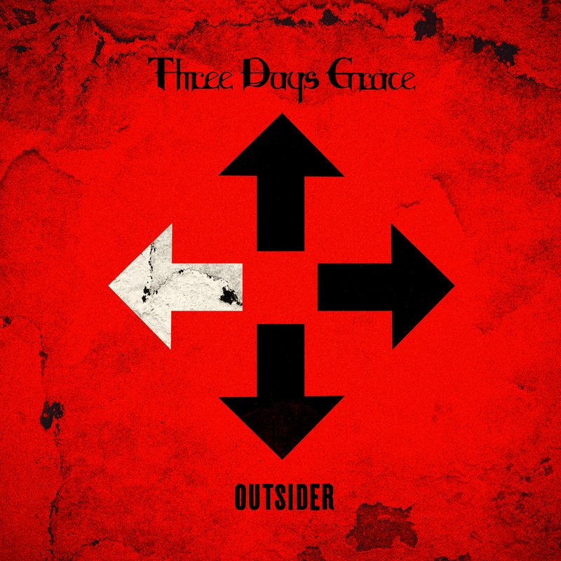
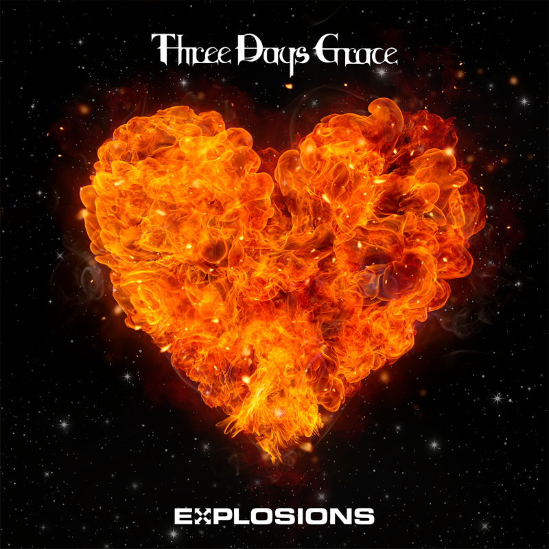
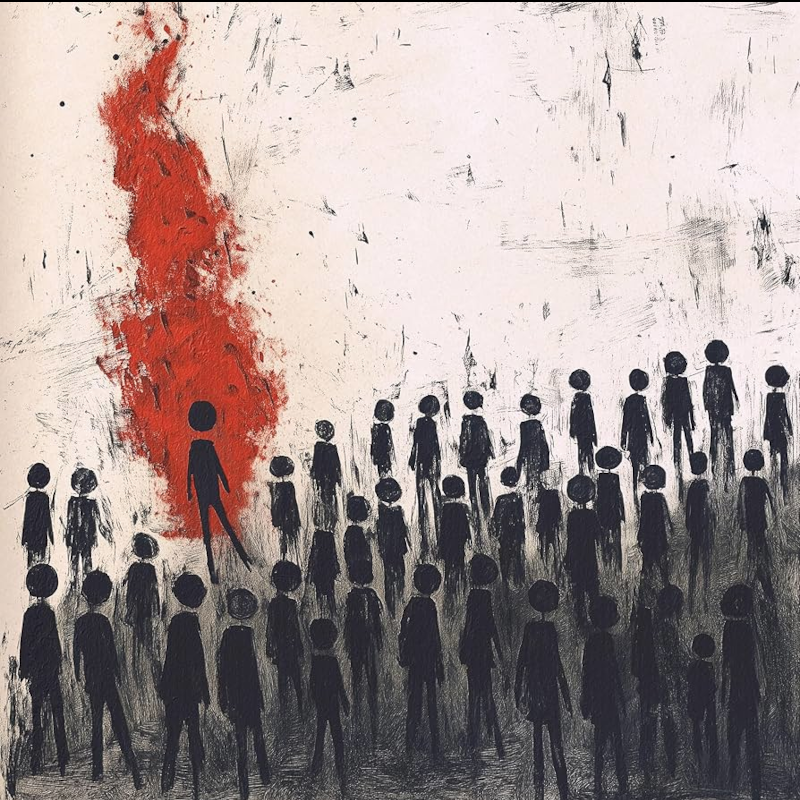

Three days grace
Pierwszy album wydany 22 lipca 2003 roku.Zawiera on 12 utworów tak jak każdy album.Moim ulubionym utworem z albumu jest "I Hate Everything About You"

One-X
Drugi album wydany 13 czerwca 2006 roku.Jest to mój ulubiony album z wszystkich.Moim ulubionym kawałkiem z albumu jest "Pain"

Life Starts Now
Trzeci album wydany 22 września 2009 roku.Moim ulubionym utworem z albumu jest "The Good Life"

Transit of Venus
Czwarty album wydany 2 października 2012 roku.Jest to mój najmniej lubiany album ale zato moim ulubionym kawałkiem z albumu jest "Chalk Outline"

Human
Piąty album wydany 31 marca 2015 roku.Jest to pierwszy album wyktórym głównym wokalistą był Matt Walst zamiast Adama Gontiera.moim ulubionym kawałkiem z albumu jest "Painkiller" lub "Fallen Angel" bo nie umiem się zdecydować który wole bardziej

Outsider
Szósty album wydany 9 marca 2018 roku.Z tego albumu pochodzi pierwszy kawałek jaki usłyszałem od Three days grace jest też on moim ulubionym z tego albumu a nim jest "Right Left Wrong"

Explosions
Siódmy album wydany 6 maja 2022 roku.Moim ulubionym utworem z tego albumu jest "So Called Life"

Alienation
Osmy i najnowszy album wydany 22 sierpnia 2025 roku.Pierwszy album po powrócie Adam Gontiera do zespołu.Utwór który najbardziej lubie z tego albumu to "Mayday"